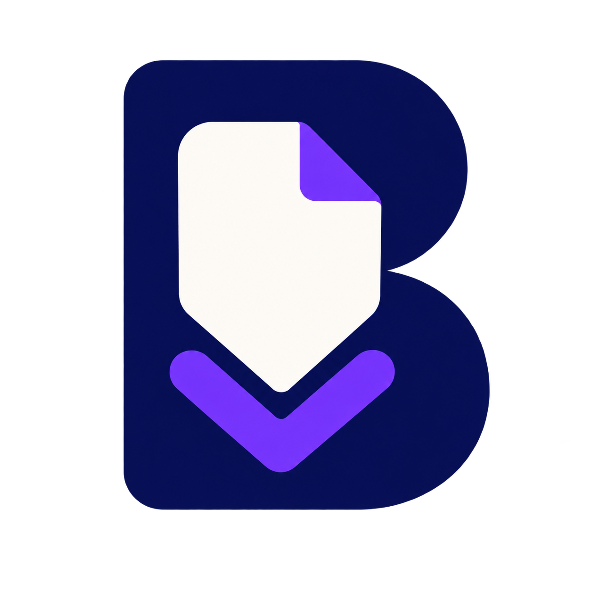

BASORA WORKSPACE
Docs to README
Turn a documentation trail into one clean Markdown file.
Start a session
Choose where your captured pages will go.
.md
Capture pages
Capture the page in your active tab, then move to the next.
No active session0 pages
Sticky mode is active. Close it with Chrome’s panel close button.
Start a session, then capture the page currently open in your tab.
Automatic crawl1–3 sec between pages
Site navigation
Teach Basora a custom “Next” control when needed.